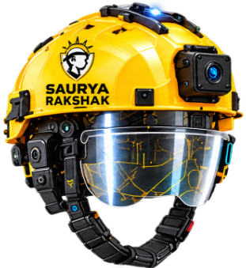
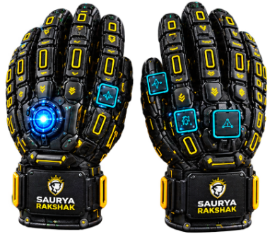
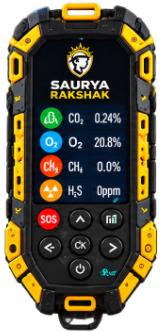

An interactive demonstration where the industrial worker in the 3D workshop is directly wearing the authentic Saurya Rakshak Smart Tactical Helmet, Armored Sensing Gloves, and Multi-Hazard Detector Pod. Observe real-time interception of electrical shock, arc flashes, toxic gas inundations, and scaffolding falls!
🔊 Turn on sound for real-time speech narration and synthetic device audio warnings.
Saurya Rakshak is an industrial safety engineering prototype verified across T01–T20 verification trials.